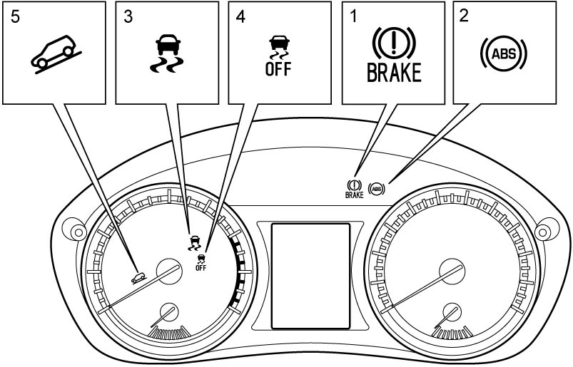

4F
| Warning / Indicator Light Description |
There are three warning and one indicator lights controlled by ESP® hydraulic unit / control module assembly in combination meter. They give warning and indication to driver by changing their modes: light ON / blinking / light OFF.

 "Expand image")
| 1. | EBD warning light (brake warning light) | 3. | ESP® warning light | 5. | Hill descent control indicator light (4WD model) |
| 2. | ABS warning light | 4. | ESP® OFF light |
Condition and Operation of Warning Light and Indicator Light
| Warning light / Indicator light | Condition and operation |
|---|---|
| ABS warning light | If ABS has abnormality, the light turns “ON”. |
| EBD warning light (brake warning light) |
•If EBD system has abnormality, the light turns “ON”.
•If brake fluid level in reservoir is lower than minimum level, the light turns “ON”. •If parking brake lever is pulled up, the light turns “ON”. |
| ESP® warning light |
•If ESP® systems has abnormality, the light turns “ON”.
•If traction control and/or stability control is activated, the light blinks. |
| ESP® OFF light | ESP® OFF light turns “ON” to indicate that ESP® hydraulic unit / control module assembly stops traction control and stability control functions. |
| Hill descent control indicator light |
•When hill descent control switch is “ON” and all the following conditions are satisfied, hill descent control function is activated and hill descent control indicator light comes “ON”.
—Driving mode switch is in “LOCK” position.
•When hill descent control switch is “ON” and vehicle condition is other than the above, hill descent control indicator light blinks.—Gear shift lever is in other than neutral position. —Vehicle speed is 25 km/h (15 mile/h) or less. —DTC of hill descent control is not detected. |